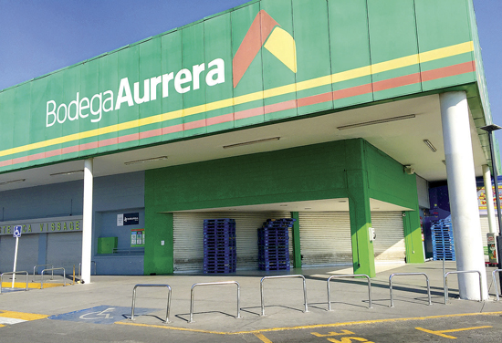
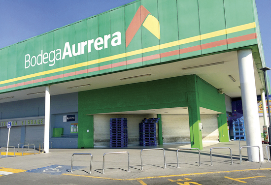
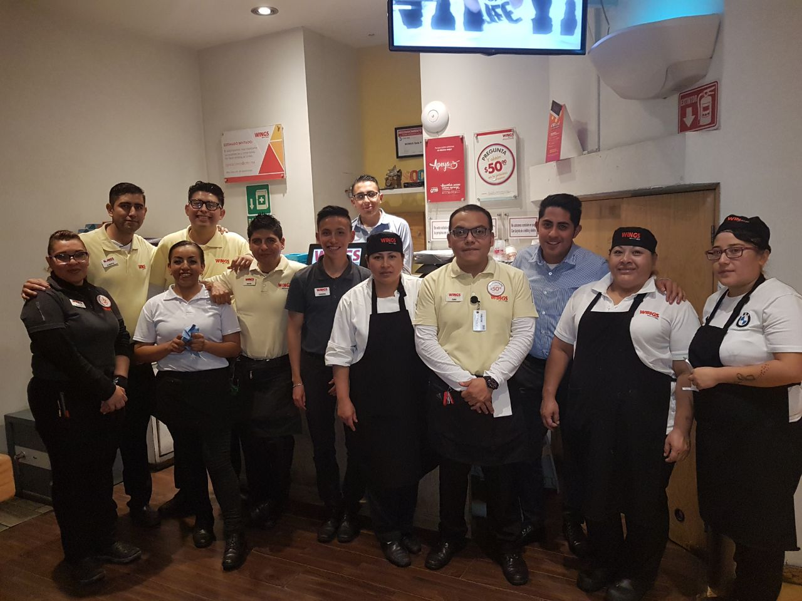
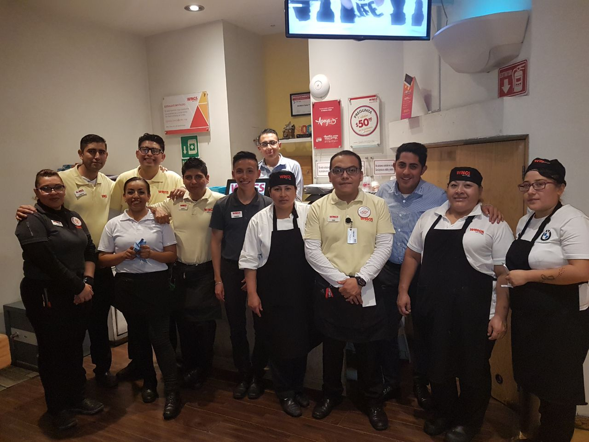
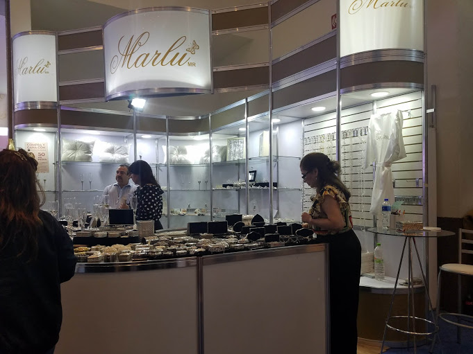
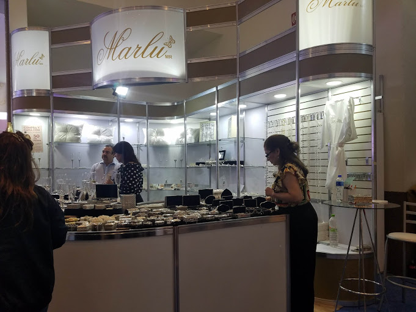

Formación académica
A continuación enlistaré y les describiré un poco los lugares en los que he estudiado:- Primaria: Su nombre es "Los símbolos patrios" y esta escuela se caracteriza por ser de tiempo completo, allí obtuve el mejor promedio de la generación y gané el concurso de la olimpiada del conocimiento a nivel zona (participaban 8 escuelas)
- Secundaria: "Justo Sierra Méndez" es el nombre de la secundaria técnica 81, en ella también destaqué por ser uno de los mejores promedios y ser parte de la escolta
- Secundaria: Sin duda uno de los lugares que más me han marcado a nivel estudiantil, la preparatoria no. 2 "Erasmo Castellanos Quinto" me enseñó a ser un poco más dedicado de lo que era porque la situación comenzaba a complicarse en las evaluaciones, allí obtuve 9.0 de promedio
- Universidad: Vaya travesía que ha sido el llegar a un lugar que no es nada menos que la mejor universidad del país y América Latina, La UNAM me ha dado una cantidad de experiencias que me han hecho reflexionar sobre mi papel (tanto en la escuela como en la casa y en la industria).
Experiencia y conocimientos relacionados con la carrera
| Nombre | ¿Dónde lo aprendí? |
|---|---|
| Curso de Diseño web | PROTECO (intersemestral) |
| Curso de C | PROTECO (intersemestral) |
| Curso de Java | PROTECO (intersemestral) |
| Curso Linux | PROTECO (prebecario) |
| Curso de C++ | PROTECO (prebecario) |
| Curso de BD | PROTECO (prebecario) |
| Curso de Redes de datos | PROTECO (prebecario) |
Experiencia laboral
Este fue mi primer empleo, pese a lo que pueden llegar a pensar de los empacadres, es un puesto que, si bien no tiene los privilegios que cualquier otro puesto (seguro, prestaciones, etc.), la paga compensa y supera esa situación.
Trabejé durante las vacaciones de verano del 2015 (Mayo-Agosto) y ahorré un aproximado de $30,000.00. 
Trabejé durante las vacaciones de verano del 2015 (Mayo-Agosto) y ahorré un aproximado de $30,000.00. 
Vaya que este fue un buen lugar para aprender el significado de la palabra esfuerzo, contrario al primer empleo en donde la carga de trabajo era proporcional a la paga, Wings me mostró que a veces no es así. Fue un trabajo que me sirvió de mucho para salir de algunos problemas económicos que tenía la familia, trabajé turnos a veces de 16 hr y... el sueldo era pésimo, lo que realmente valía la pena allí eran las propinas que dejaban los comensales.
Trabajé durante las vacaiones decembrinas en el segundo semestre de la carrera, lo tomé por lo comentado anteriormente y porque un amigo me recomendó. No sé siquiera si llegué a ahorrar algo de ese empleo. 
Trabajé durante las vacaiones decembrinas en el segundo semestre de la carrera, lo tomé por lo comentado anteriormente y porque un amigo me recomendó. No sé siquiera si llegué a ahorrar algo de ese empleo. 
Este es un trabajo bastante simple, lo hago de manera esporádica porque depende de las expocisiones que se presenten en el WTC, trabajo los meses de enero, febrero, junio, julio y octubre. Es una de las clientes de mi madre (es diseñadora de stands) y me ofreció empleo porque le hacía falta personal.
La señora para la que trabajo es horiunda de Moterrey, me ofrece $500 por cada día de trabajo y me paga las comidas. Es la señora que aparece en el extremo derecho de la imagen. 
La señora para la que trabajo es horiunda de Moterrey, me ofrece $500 por cada día de trabajo y me paga las comidas. Es la señora que aparece en el extremo derecho de la imagen. 